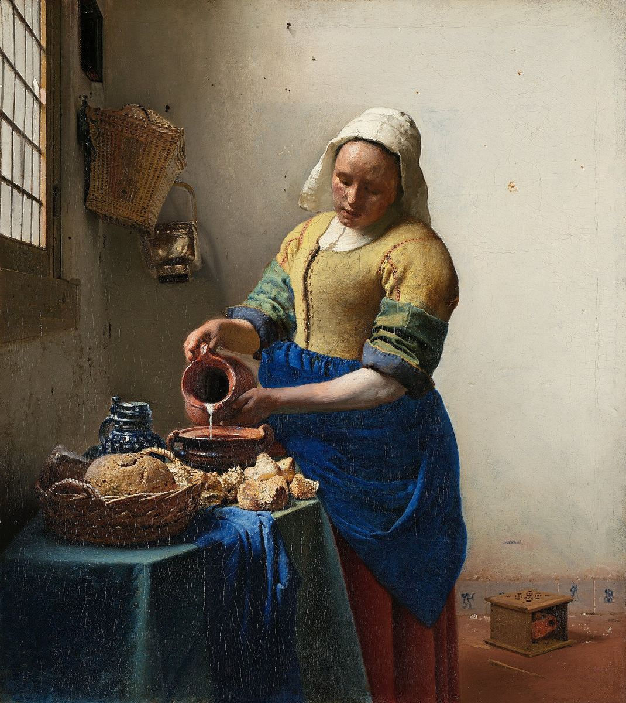

The Milkmaid

Palette
- Bone · your word: Beige
- Café noir · your word: Umber
- Black · your word: Black
- Taupe · your word: Taupe
- Van Dyke brown · your word: Mahogany
- Oxford blue · your word: Navy
- Camel · your word: Camel
Vermeer's blue and yellow pair: the apron and tablecloth are natural ultramarine mixed with lead white and glazed with more ultramarine, and the bodice is lead-tin yellow. The bright wall is not white at all but a warm grey mixed from umber, black and white. Scans published by the Rijksmuseum in 2022 found a jug holder and a fire basket that he painted out.
Image
Wikimedia Commons · Public domain

Hex values are screen approximations. Every page lists its sources.